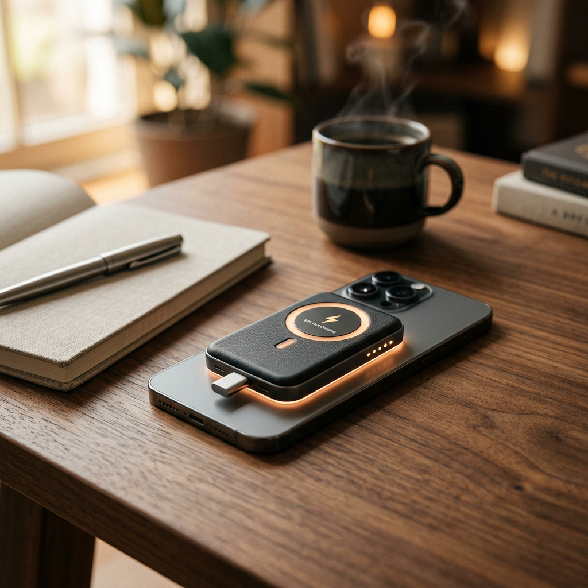
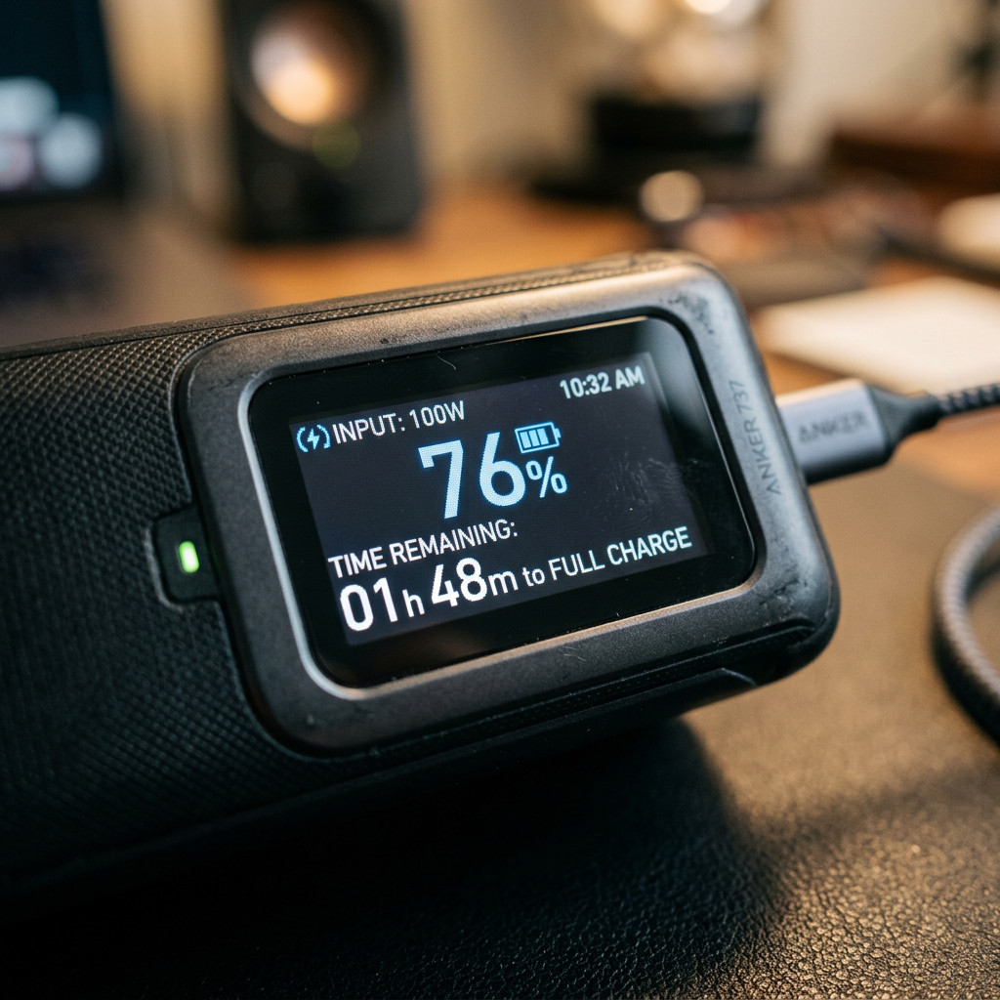

Best MagSafe Power Bank: The Ultimate Guide to High-Speed Wireless Charging
Why Your Current Power Bank Is Failing You
We have all been there: you are halfway through a busy day, navigating via GPS or capturing memories, and that dreaded '10% Battery' notification pops up. You reach for a traditional power bank, only to realize you forgot the cable, or worse, the cable is frayed and unreliable. Standard wireless chargers aren't much better, often overheating your device while charging at a snail's pace.
The frustration of a dead phone isn't just an inconvenience; it is a productivity killer. For the high-intent user, 'good enough' charging doesn't cut it anymore. You need a solution that snaps on securely, charges at maximum speed, and fits into your pocket without the bulk. That is where the next generation of MagSafe technology—specifically Qi2 certification—changes everything.

The Best MagSafe Power Banks Compared
Before we dive into the deep technical specifications, here is how the market leader stacks up against standard industry alternatives. This comparison highlights why choosing a certified device is critical for your hardware's longevity and your own sanity.
| Product Name | Charging Speed | Key Feature | Verdict |
|---|---|---|---|
| Anker MagGo Power Bank (Qi2) | 15W (Ultra-Fast) | Smart LCD Display & Kickstand | The Unbeatable Pro Choice |
| Generic MagSafe Charger | 7.5W (Standard) | Basic Magnet | Slow and Prone to Heat |
| Standard Wired Bank | 20W (Wired only) | Requires Cables | Inconvenient for Travel |
The Gold Standard: Anker MagGo Power Bank (Qi2 Certified)
When it comes to the best MagSafe power bank, the Anker MagGo (Qi2 Certified) isn't just a battery; it is a sophisticated piece of power management hardware. As a veteran in the charging space, Anker has solved the three biggest complaints users have: speed, heat, and visibility.
15W Ultra-Fast Charging: No More Waiting
Most magnetic chargers are capped at 7.5W for non-proprietary devices. The Anker MagGo utilizes the new Qi2 standard to deliver a full 15W of power wirelessy. This effectively cuts your charging time in half compared to older models. For the professional on the move, those saved minutes are the difference between a working phone and a paperweight during a critical meeting.

Smart Monitoring & Total Transparency
One of the standout features of this device is the integrated smart display. Unlike cheap power banks that use four flickering LEDs to guess your remaining power, the Anker MagGo provides a real-time readout. You can see exactly how much juice is left and, more importantly, how long it will take to recharge the bank itself. This eliminates 'battery anxiety' by providing precise data.
Advanced Thermal Management
Heat is the enemy of battery health. Anker’s ActiveShield 2.0 technology monitors temperature over 3 million times per day. This ensures that even while delivering 15W of power, your phone stays cool, protecting your internal battery's lifespan. This is a crucial distinction from unbranded chargers that can degrade your phone's battery health within months of use.
Designed for the Modern Workflow
The physical design of the Anker MagGo reflects a deep understanding of user psychology. It features a built-in foldable kickstand, allowing you to use your phone in 'StandBy' mode while it charges. Whether you are watching a video on a flight or keeping your notifications visible on a desk, the ergonomics are flawless.
Why High-Intent Buyers Choose Qi2
- Perfect Alignment: The magnets are calibrated to snap into the 'sweet spot' every time, preventing power loss.
- Universal Compatibility: While optimized for MagSafe, the Qi2 standard ensures future-proofing for the next generation of mobile devices.
- Compact Footprint: Despite its 10,000mAh capacity, it maintains a profile that doesn't obstruct your camera lenses.
Final Verdict: Is It Worth It?
If you are tired of carrying tangled cables and waiting hours for a partial charge, the transition to a high-quality MagSafe power bank is the single best upgrade you can make for your mobile kit. The Anker MagGo Power Bank (Qi2 Certified) stands alone at the top of the mountain because it refuses to compromise on speed or safety.
While generic alternatives might save you a few dollars today, they cost you in charging speed and long-term phone battery health. For those who value their time and their tech, the choice is clear.
Stop tethering yourself to wall outlets and low-quality magnets. Upgrade your power experience today.